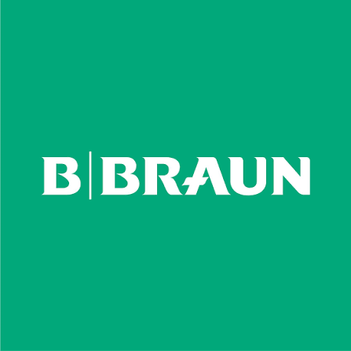

computer vision · in production

Medical Vision Inspection
B. Braun Medical — the project I'm most proud of
Patent pending — named inventor
I built a real-time vision system that inspects medical vials and syringes, catching errors in NDC codes, expiration dates, lot numbers, and fill volumes. I designed and trained custom ResNet and YOLO models and paired them with EasyOCR to read each label. It's part of a larger inspection system that has a patent pending with my name on it.
PyTorchYOLOResNetEasyOCRPHP
real-time
defect detection
multi-site
used on the floor
NDC0264·9876
EXP2027·04
LOTA1B2C3
VOL4.2 mL · low